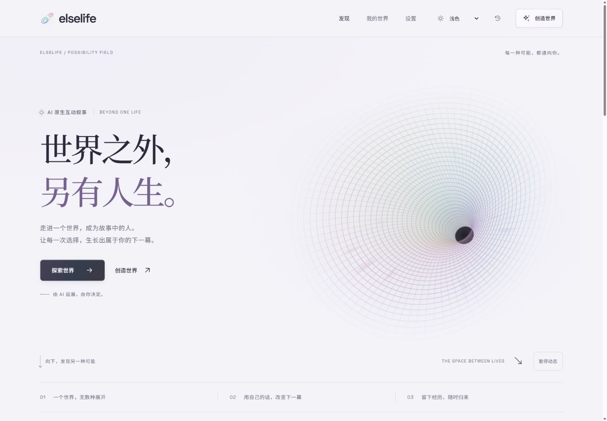

从一个念头出发
选择现有世界，或用一句话描述你想进入的处境。以角色的身份，开始一段属于自己的经历。
AINOVEL / 作品 001
elselife · 人生复本

A STORY YOU CAN TAKE PART IN
选择现有世界，或用一句话描述你想进入的处境。以角色的身份，开始一段属于自己的经历。
写下行动，先问问设定，或继续读下一段。重大选择由你决定，AI 根据当前故事延展后续。
保存此刻，从历史节点创建分支。回来继续之前的经历，或把故事导出留存。
TRY THE CURRENT PROTOTYPE
当前版本面向本机单人使用。公开在线试玩和购买尚未开放，你可以从公开仓库获取代码，在自己的电脑上运行。
查看完整安装与使用说明 ↗准备 Node.js 22 或以上版本，获取项目后，在项目目录运行：
npm ci
npm start按终端提示打开本地页面。
选择预设故事，体验阅读、建议行动与存档。演示使用预写内容，适合先熟悉操作。
按照仓库说明配置模型后，可使用自由生成等能力。模型服务可能产生费用，取决于你连接的服务。
BEFORE YOU START
它更接近一个可以参与的故事空间：既能阅读，也能以角色身份作出行动，并探索不同分支。
目前提供的是可本地运行的开发原型，尚无公开在线试玩或付费购买入口。正式版本开放后，会在这里更新。
当前版本使用本机服务和浏览器存储，不提供云账号或云同步。建议按仓库说明备份存档，并使用导出功能保留故事。
演示采用预写情境，不等于自由生成。真实 AI 故事需要模型连接，生成质量与等待时间受到所连接模型和输入内容影响。
也欢迎从工具和使用方法开始，找到你自己的创作方式。
探索 AI 工具 ↗